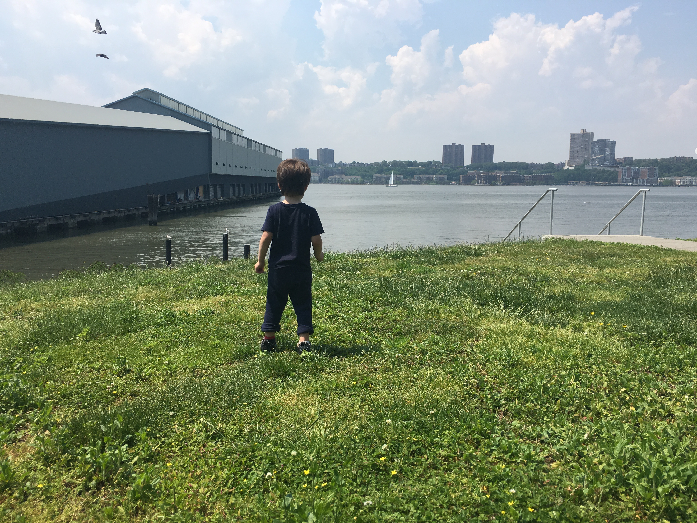
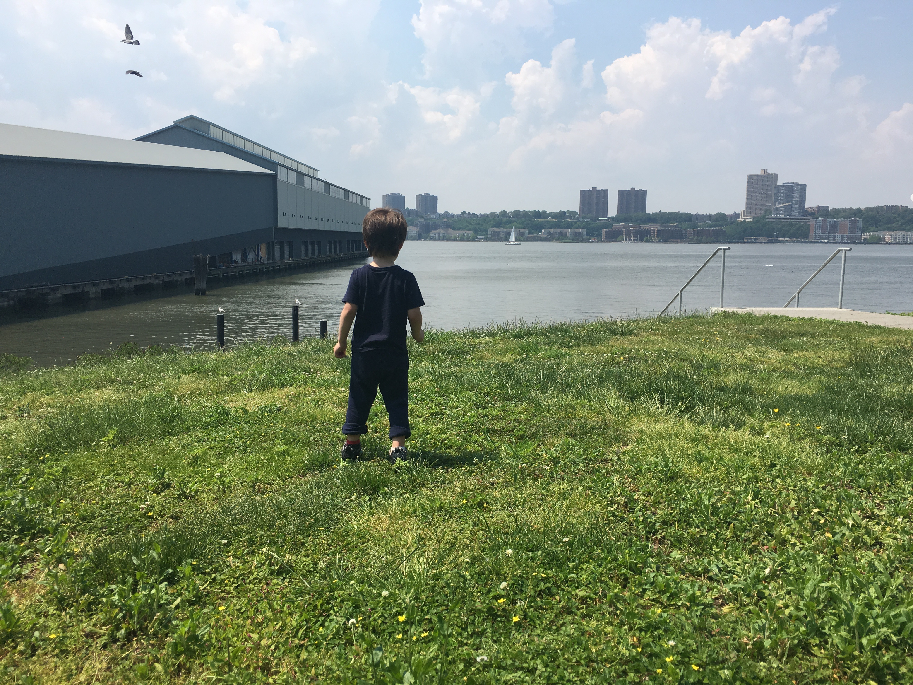
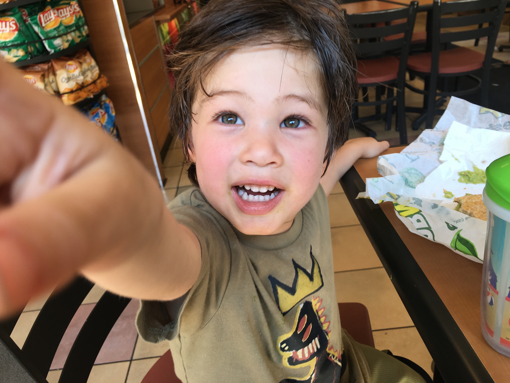

Friday (Half-Day After School)
On the Friday before the long Memorial Day weekend, Zach's school was only half-day. Our favorite park near our neighborhood in Hell's Kitchen is Clinton/DeWitt playground. We tried to go there, but it looked like a entire NYC-sized middle school was at recess there, and Zach is just a little 3-year-old. We checked out the frog fountain just outside the playground instead that are now turned on (since the weather went from 40F to 80F in what seeme like a few days. Zach has never really been into the NYC fountains where the kids play. And that's fine with me. Instead we went to Riverside Park on the Hudson River. It was HOT. Zach climbed up a hill of rocks, made his way to the top, and picked a few flowers. We went home after it got too hot, and Zach napped when we got home. That night, I cooked dinner and aftewards, we went to Amy's Bread and got some ice cream and pastries. We really enjoyed being outside in the NYC summer weather, after a long and cold winter, which we're not used to coming from California now.
 

Saturday
Saturday morning, Zach and I went to DeWitt/Clinton Park. He played at the playground for a while. We stopped to get a bottle of water across the treet on the way home. Then for our biggest adventure of the weekend, we went on the Circle Line Landmark Cruise tour! It was really good, better than I could have expected. We saw the NYC skyline, the Jerz, the Statue of Liberty, Dumbo, and Brooklyn and the Brooklyn Bridge. It felt great to stand outside on the boat, sometimes feeling the water misting you a little. Zach loved it most of all, taking in the scenery and the water, all while never sitting still and keeping us moving the whole time also.
Section 3
Saturday morning, Zach and I went to DeWitt/Clinton Park. He played at the playground for a while. We stopped to get a bottle of water across the treet on the way home. Then for our biggest adventure of the weekend, we went on the Circle Line Landmark Cruise tour! It was really good, better than I could have expected. We saw the NYC skyline, the Jerz, the Statue of Liberty, Dumbo, and Brooklyn and the Brooklyn Bridge. It felt great to stand outside on the boat, sometimes feeling the water misting you a little. Zach loved it most of all, taking in the scenery and the water, all while never sitting still and keeping us moving the whole time also.
Section 4
Cras dictum. Pellentesque habitant morbi tristique senectus et netus et malesuada fames ac turpis egestas. Vestibulum ante ipsum primis in faucibus orci luctus et ultrices posuere cubilia Curae; Aenean lacinia mauris vel est.
Suspendisse eu nisl. Nullam ut libero. Integer dignissim consequat lectus. Class aptent taciti sociosqu ad litora torquent per conubia nostra, per inceptos himenaeos.